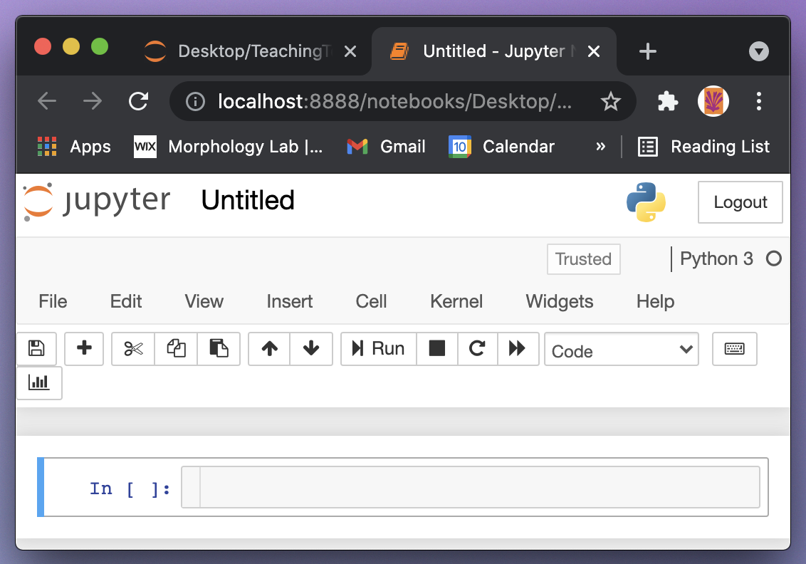
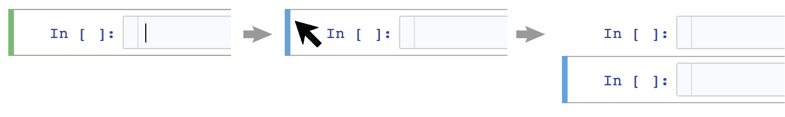
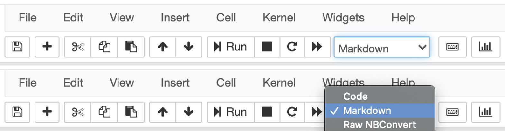

Installing Anaconda and using Jupyter notebooks¶
Watch this video from 0:00 to 3:33
# To load the video, execute this cell by pressing shift + enter
from IPython.display import YouTubeVideo
from datetime import timedelta
start=int(timedelta(hours=0, minutes=0, seconds=0).total_seconds())
end=int(timedelta(hours=0, minutes=3, seconds=33).total_seconds())
YouTubeVideo("FrDYpLVuTkQ",start=start,end=end,width=640,height=360)
The following is a transcript of the video.
In this tutorial we’re going to learn how to download Anaconda and get going with Jupyter notebooks. The first step, of course, is to download and install Anaconda. With Anaconda will come Python, Jupyter, and a number of Python modules that are necessary for us to do analyses.
Go to https://docs.anaconda.com/anaconda/install
This link might change with time but if you can find Anaconda and where to download it and install it there should always be instructions. Once on the installation page, click on the link for your operating system. For example, if you’re using Windows click on “Installing on Windows” and there will be detailed instructions for download and install. The same for macOS, as well as for Linux.
Once you have followed the instructions, downloaded, and installed Anaconda you should be able to load Jupyter. To load Jupyter on macOS or linux there’s an application called terminal that gets you to the terminal. On Windows you need to go to the command prompt. Once you’re at the command line simply type “jupyter” and remember there’s a “y” not an “i”. It’s jupyter with a “y”, space, “notebook”: “jupyter notebook”. And press enter. Jupyter should load.

It will load up in your browser. I’m using Chrome, for example. Jupyter is not using the internet. It’s running locally on your own computer and it’s just using the browser to display the interface. The Jupyter interface shows you your home directory or whatever directory you’ve chosen for it to display. Once you’re here at the Jupyter interface you can go to the right hand corner under new and create a new notebook.

You can click on the title at the top and give it a name. You can say “my_jupyter_notebook” for a name, for example, and rename it.


Jupyter notebooks consist of cells. Cells are everything that a Jupyter notebook is, so it’s important to be able to create them and to delete them. Some really convenient shortcuts are “a”, “b” and “x”. “a” and “b” will create a new cell above or below. So if you click on the left side of the cell near the blue bar and you press “a” you’ll create a cell above. If you press “b” you’ll create a new cell below. And it’s easy to create as many cells as you want and importantly “x” is a convenient way to delete a cell.

There are two main types of cells in Jupyter. There are coding cells and there are markdown cells. By default the cells are coding and you can change them up here on this drop down menu. Right now it’s a coding cell but we can change it to a markdown cell. Notice that when we create a markdown cell that the little prompt on the left goes a way. You can also use shortcuts to convert between coding and markdown cells. You use “m” to change it to markdown and you press “y” to change it back to coding.
